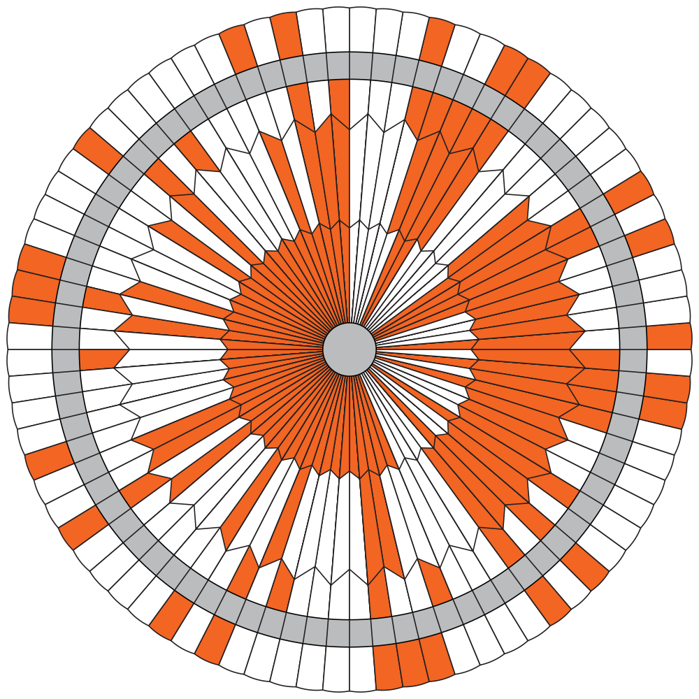

When Ralph decided to do a stunt show, he needed great perseverance—and many strings—to attach safety equipment to his motorcycle.
- Predecessor of polyamide 66 and F-111 (4)
- Rolling Stones song (5)
- Bonus money (6)
- 1980s fashion trend (5)
- Self-help book (15)
- The fighting 506th (8)
- Carpetbagger (9)

See puzzle for grid image.